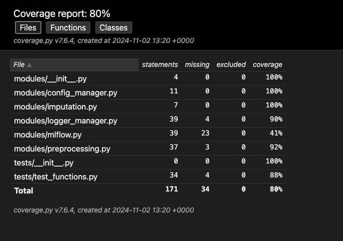
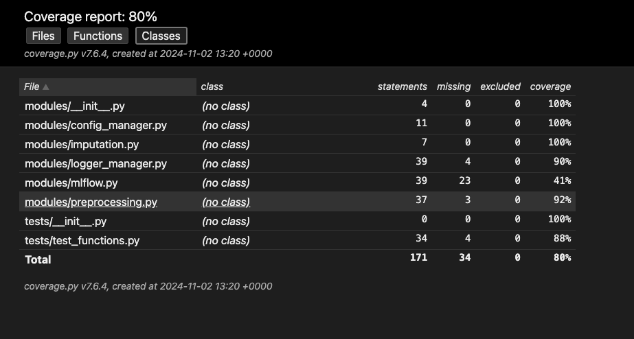
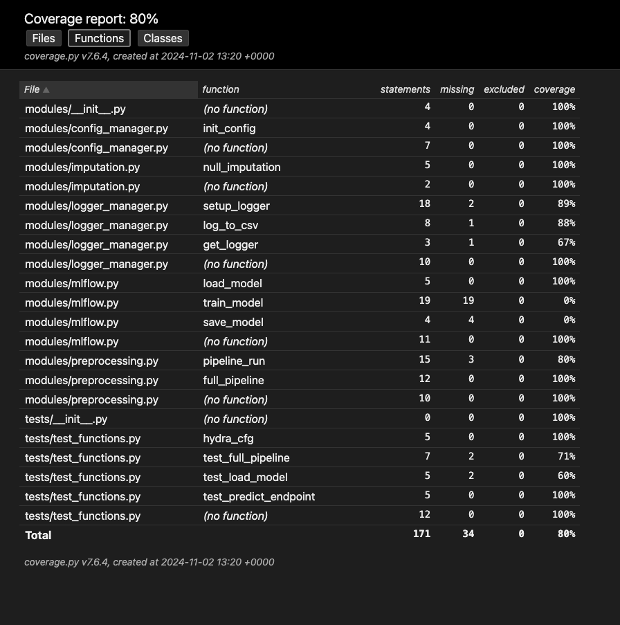

Coverage Report Summary
This report summarizes the code coverage achieved during testing. The overall coverage is 80%.
Overview
The report was generated using coverage.py v7.6.4 on 2024-11-02 13:20 +0000. A total of 171 statements were analyzed, with 34 missing. No statements were excluded.
Detailed Breakdown
The following tables provide a more granular view of the coverage, broken down by files, classes, and functions.
Files

This view shows the coverage for each file in the project. Files like modules/__init__.py, modules/config_manager.py, and modules/imputation.py have achieved 100% coverage. However, modules/mlflow.py and modules/logger_manager.py have lower coverage, indicating areas that require more testing.
Classes

This view shows the coverage by class. Since most of the files don't define classes (indicated by "(no class)"), this view doesn't provide much additional information beyond the file-level view in this specific case.
Functions

This view provides the most detailed breakdown, showing the coverage for individual functions. This helps pinpoint specific functions with low coverage, such as log_to_csv and get_logger within modules/logger_manager.py, and train_model in modules/mlflow.py. These functions should be prioritized for further testing.
Conclusion
While the overall coverage is 80%, there are areas that require improvement. Focusing testing efforts on the modules and functions identified with lower coverage will help increase the overall robustness and reliability of the codebase.